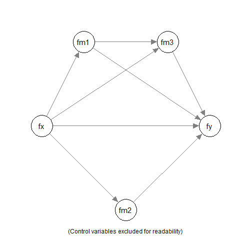

Arbitrary Mediation Models Corrected for Measurement Error
Using
q_mediation()
Shu Fai Cheung & Sing-Hang Cheung
2026-05-28
Source:vignettes/articles/q_mediation_sem_indicators_arbitrary.Rmd
q_mediation_sem_indicators_arbitrary.RmdIntroduction
This article is a brief illustration of how to use the all-in-one “quick” functions from manymome (Cheung & Cheung, 2024) to fit a structural model and compute and test indirect effects in one step.
It is similar to using them on observed scores, such as scaled scores, as illustrated in this article. However, that approach does not take into account measurement errors, which can be done if a construct is measured by several indicators.
This article demonstrates how to fit a model and test indirect effects when some of the constructs are latent variables measured by multiple indicators, with the measurement error taken into account using structural equation modeling (SEM).
NOTE: This is part of a series of similar articles with duplicated sections, each dedicated to one form of models. See a full list of articles here.
Data Set
The sample dataset data_indicators will be used in this
illustration.
library(manymome)
dat <- data_indicators
print(round(head(dat), 2))
#> x_1 x_2 x_3 x_4 m1_1 m1_2 m1_3 m1_4 m2_1 m2_2 m2_3 m2_4 m3_1
#> 1 -0.15 2.39 0.70 0.31 0.30 1.06 -0.23 0.58 -0.16 -0.09 0.38 -0.89 0.58
#> 2 -1.25 0.59 -2.42 1.27 -0.21 -1.86 -1.78 -1.75 -2.32 -0.84 -1.19 -0.50 -1.95
#> 3 -0.02 -0.82 -0.49 0.48 0.85 -0.19 2.17 0.49 1.49 2.05 -0.84 -0.29 2.59
#> 4 0.24 -1.13 -1.27 1.81 -0.50 -0.91 -2.01 0.41 0.30 1.22 -1.10 -0.33 1.86
#> 5 0.08 1.36 0.32 0.16 1.19 0.34 1.48 0.64 0.43 1.90 -1.08 1.33 3.43
#> 6 -2.20 -1.77 -1.38 0.54 0.31 -1.88 0.16 0.20 -2.74 -2.74 -1.36 -1.06 -0.61
#> m3_2 m3_3 m3_4 y_1 y_2 y_3 y_4 c1_1 c1_2 c1_3 c1_4 c2_1 c2_2
#> 1 -0.12 2.40 2.05 -2.89 -1.33 -1.83 2.11 0.70 0.09 -2.25 0.27 -1.24 -0.60
#> 2 -2.71 -3.50 -2.26 -1.49 -2.13 -0.24 2.34 0.22 0.70 -0.28 1.43 -0.05 -2.23
#> 3 2.80 -0.16 2.28 1.80 -0.56 1.55 -0.90 1.29 -0.08 1.91 1.26 -0.68 -1.04
#> 4 0.95 1.32 1.09 -0.10 0.28 -2.11 0.56 -1.90 -0.61 -0.75 -2.30 -1.80 0.28
#> 5 2.82 2.91 1.56 2.53 1.92 2.62 -2.18 1.51 2.84 2.88 2.42 -0.85 -0.54
#> 6 -0.90 0.52 1.14 0.58 -1.91 0.71 1.20 1.50 -1.79 1.08 0.17 -1.53 -3.94
#> c2_3 c2_4 x m1 m2 m3 y c1 c2
#> 1 -1.69 -1.52 0.66 0.43 -0.19 1.23 -2.04 -0.30 -1.26
#> 2 -2.93 -2.10 -1.09 -1.40 -1.21 -2.60 -1.55 0.52 -1.83
#> 3 -0.89 -0.09 -0.45 0.83 0.60 1.88 0.92 1.09 -0.68
#> 4 0.07 0.62 -0.99 -0.75 0.02 1.31 -0.62 -1.39 -0.21
#> 5 -2.72 -2.63 0.40 0.91 0.64 2.68 2.31 2.41 -1.69
#> 6 -2.48 -0.73 -1.47 -0.30 -1.98 0.04 -0.45 0.24 -2.17For illustration, only the following variables will be used:
x_1,x_2,x_3, andx_4: The indicators offx, the predictor. The indicatorx_4is a reverse items.m1_1,m1_2,m1_3, andm1_4: The indicators offm1, the first mediator.m2_1,m2_2,m2_3, andm2_4: The indicators offm2, the second mediator.m3_1,m3_2,m3_3, andm3_4: The indicators offm3, the second mediator.y_1,y_2,y_3, andy_4: The indicators offy, the outcome variable. The indicatory_4is a reverse items.c1_1,c1_2,c1_3, andc1_4: The indicators offc1, a control variable.c2: An observed control variable. To illustrate mixing latent and observed variables in a model.
Arbitrary Mediation Model
Suppose we would like to fit an arbitrary mediation model with three
mediators, fm1, fm2, and fm3,
with fc1 and c2 as the control variables.

We would to fit the model above, and compute and test the indirect effects along the following paths:
fx -> fm1 -> fm3 -> yfx -> fm2 -> y
using nonparametric bootstrapping.
Analysis
We can do that in one single step using
q_mediation():
out <- q_mediation(
x = "fx",
y = "fy",
model = c("fx -> fm1 -> fm3 -> fy",
"fx -> fm1 -> fy",
"fx -> fm3 -> fy",
"fx -> fm2 -> fy",
"fx -> fy"),
m = c("fm1", "fm2"),
cov = c("fc1", "c2"),
indicators = list(
fx = c("x_1", "x_2", "x_3", "-x_4"),
fy = c("y_1", "y_2", "y_3", "-y_4"),
fm1 = c("m1_1", "m1_2", "m1_3", "m1_4"),
fm2 = c("m2_1", "m2_2", "m2_3", "m2_4"),
fm3 = c("m3_1", "m3_2", "m3_3", "m3_4"),
fc1 = c("c1_1", "c1_2", "c1_3", "c1_4")
),
fit_method = "sem",
indicator_method = "measurement_model",
data = dat,
R = 5000,
seed = 1234
)These are the arguments:
x: The name of the predictor (“x” variable).y: The name of the outcome (“y” variable).-
model: A character vector of the paths in the model. Each of the path is of this form:"x -> m1 -> m2 -> y", from the predictor to the outcome, separated by->. The mediators of the model will be inferred from the paths. Any possible paths not specified will be fixed to zero.For example, the path
"fx -> fm1 -> fm2 -> y"is not in the model. Therefore, the pathfm1 -> fm2will be fixed to zero.NOTE: When using
modelto specify an arbitrary model, all paths need to be manually specified. Therefore, the direct path fromxtoyis not added by default. In the example, this is included by"fx -> fy".
fit_methodandindicator_method: To fit a model with the measurement part, using the information fromindicators, setfit_methodto"sem"andindicator_methodto"measurement_model"data: The data frame for the model.R: The number of bootstrap samples. Should be at least 5000 but can be larger for stable results.seed: The seed for the random number generator. Should always be set to an integer to make the results reproducible.
The computation may take some time to run, especially if missing data is presence, due to the processing time combining bootstrapping and full-information maximum likelihood (FIML), the default way to handle missing data.
Results
We can then just print the output:
outThe printout is long. They will be discussed section-by-section below.
These are the main sections of the default results:
Basic Information
This is the section Basic Information:
#> ===================================================
#> | Basic Information |
#> ===================================================
#>
#> Predictor(x): fx
#> Outcome(y): fy
#> Mediator(s)(m): fm1, fm2
#> Model: User-Specified Model
#> Indicators Method: Fit a measurement model
#>
#> The path model fitted:
#>
#> fm1 ~ fx + fc1 + c2
#> fm3 ~ fm1 + fx + fc1 + c2
#> fy ~ fm3 + fm1 + fm2 + fx + fc1 + c2
#> fm2 ~ fx + fc1 + c2
#> fx =~ x_1 + x_2 + x_3 + x_4
#> fy =~ y_1 + y_2 + y_3 + y_4
#> fm1 =~ m1_1 + m1_2 + m1_3 + m1_4
#> fm2 =~ m2_1 + m2_2 + m2_3 + m2_4
#> fm3 =~ m3_1 + m3_2 + m3_3 + m3_4
#> fc1 =~ c1_1 + c1_2 + c1_3 + c1_4
#>
#> The original number of cases: 600
#> The number of cases in the analysis: 600
#> Missing data handling: FIML (full information maximum likelihood)It shows the variables, the models, and the number of cases. It also
shows the measurement model in the model, in lavaan
syntax:
The name on the left-hand side of
=~is the latent variable.The name on the right-hand side of
=~, joined by+, are the indicators.
When the model is fitted by SEM, the default method to handle missing data is full-information maximum likelihood (FIML).
Indicator Information
#> ===================================================
#> | Indicator Information |
#> ===================================================
#>
#> The indicators for the following variable(s):
#>
#> fx: x_1, x_2, x_3, -x_4
#> fy: y_1, y_2, y_3, -y_4
#> fm1: m1_1, m1_2, m1_3, m1_4
#> fm2: m2_1, m2_2, m2_3, m2_4
#> fm3: m3_1, m3_2, m3_3, m3_4
#> fc1: c1_1, c1_2, c1_3, c1_4
#>
#> Note:
#> - '-' denotes revserse-coded items.
#>
#> The standardized factor loadings:
#>
#> fx:
#> Reliability: 0.7215
#> Loading
#> x_1 0.5668
#> x_2 0.5905
#> x_3 0.6652
#> x_4 0.6808
#>
#> fy:
#> Reliability: 0.8812
#> Loading
#> y_1 0.8274
#> y_2 0.7788
#> y_3 0.7995
#> y_4 0.8171
#>
#> fm1:
#> Reliability: 0.7747
#> Loading
#> m1_1 0.6862
#> m1_2 0.6214
#> m1_3 0.7230
#> m1_4 0.6818
#>
#> fm2:
#> Reliability: 0.6636
#> Loading
#> m2_1 0.6122
#> m2_2 0.5255
#> m2_3 0.5501
#> m2_4 0.6072
#>
#> fm3:
#> Reliability: 0.8183
#> Loading
#> m3_1 0.7683
#> m3_2 0.7247
#> m3_3 0.7192
#> m3_4 0.6979
#>
#> fc1:
#> Reliability: 0.7150
#> Loading
#> c1_1 0.6025
#> c1_2 0.6566
#> c1_3 0.5576
#> c1_4 0.6624
#>
#> Note:
#> - Revserse-coded items have been reverse-coded when estimating the
#> loadings.
#> - If the loading of an item is negative, its coding (revserse or
#> non-reverse) may be incorrect.
#> - Reliability estimated by omage coefficients.The section Indicator Information shows results related
to each latent factor:
The indicators for each latent variable.
-
The standardized factor loadings from the SEM results.
- Note that, after recoding, all loadings should be positive. If any
loading is negative, it may be a reverse indicator not specified in
indicators.
- Note that, after recoding, all loadings should be positive. If any
loading is negative, it may be a reverse indicator not specified in
The reliability coefficient for each latent factor, based on the factor loadings. Omega coefficient is used, computed by
semTools::compRelSEM().
Model Fit
The section Structural Equation Modeling Results print
the results from lavaan for the model.
#> Model Test User Model:
#>
#> Test statistic 256.598
#> Degrees of freedom 259
#> P-value (Chi-square) 0.531
#>
#> Model Test Baseline Model:
#>
#> Test statistic 4845.298
#> Degrees of freedom 300
#> P-value 0.000
#>
#> User Model versus Baseline Model:
#>
#> Comparative Fit Index (CFI) 1.000
#> Tucker-Lewis Index (TLI) 1.001
#>
#> Root Mean Square Error of Approximation:
#>
#> RMSEA 0.000
#> Confidence interval - lower 0.000
#> Confidence interval - upper 0.016
#> P-value H_0: RMSEA <= 0.050 1.000
#> P-value H_0: RMSEA >= 0.080 0.000
#>
#> Standardized Root Mean Square Residual:
#>
#> SRMR 0.030First, results on goodness-of-fit are printed:
Model Test User Modelreports the model and its df and p-value.Basic fit measures (CFI, TLI, RMSEA, and SRMR) are also printed.
Regression Results
The next few sections print the regression coefficients when
predicting the mediators (fm1 and fm2 in this
model) and the outcome variable (fy in this model).
These are the results in predicting fm1,
fm2, fm3, and fmy:
#> ----------------
#> Predicting fm1 :
#> ----------------
#>
#> Model:
#> fm1 ~ fx + fc1 + c2
#> Estimate CI.lo CI.hi betaS Std. Error z value Pr(>|z|)
#> (Intercept) 0.0000 0.0000 0.0000 ---- 0.0000 ---- ----
#> fx 0.6713 0.4722 0.8703 0.4827 0.1015 6.610 <2e-16 ***
#> fc1 0.0802 -0.0764 0.2368 0.0609 0.0799 1.004 0.316
#> c2 0.0455 -0.0456 0.1366 0.0423 0.0465 0.979 0.328
#> ---
#> Signif. codes: 0 '***' 0.001 '**' 0.01 '*' 0.05 '.' 0.1 ' ' 1
#>
#> R-square: 0.2644
#>
#> Chi-Squared Difference Test for the R-square
#>
#> Df AIC BIC Chisq Chisq diff Df diff Pr(>Chisq)
#> fit1 259 45682 46073 256.60
#> fit0 262 45781 46159 361.53 104.93 3 < 2.2e-16 ***
#> ---
#> Signif. codes: 0 '***' 0.001 '**' 0.01 '*' 0.05 '.' 0.1 ' ' 1
#>
#> - BetaS are standardized coefficients with (a) only numeric variables
#> standardized and (b) product terms formed after standardization.
#> Variable(s) standardized is/are: fm1, fx, fc1, c2
#> - CI.lo and CI.hi are the 95.0% confidence levels of 'Estimate'
#> computed from the z values and standard errors.
#>
#> ----------------
#> Predicting fm3 :
#> ----------------
#>
#> Model:
#> fm3 ~ fm1 + fx + fc1 + c2
#> Estimate CI.lo CI.hi betaS Std. Error z value Pr(>|z|)
#> (Intercept) 0.0000 0.0000 0.0000 ---- 0.0000 ---- ----
#> fm1 0.7213 0.5719 0.8707 0.6566 0.0762 9.464 <2e-16 ***
#> fx -0.1084 -0.3082 0.0914 -0.0709 0.1020 -1.063 0.288
#> fc1 0.0232 -0.1352 0.1816 0.0161 0.0808 0.287 0.774
#> c2 0.0373 -0.0561 0.1308 0.0316 0.0477 0.783 0.434
#> ---
#> Signif. codes: 0 '***' 0.001 '**' 0.01 '*' 0.05 '.' 0.1 ' ' 1
#>
#> R-square: 0.3965
#>
#> Chi-Squared Difference Test for the R-square
#>
#> Df AIC BIC Chisq Chisq diff Df diff Pr(>Chisq)
#> fit1 259 45682 46073 256.60
#> fit0 263 45849 46223 431.88 175.28 4 < 2.2e-16 ***
#> ---
#> Signif. codes: 0 '***' 0.001 '**' 0.01 '*' 0.05 '.' 0.1 ' ' 1
#>
#> - BetaS are standardized coefficients with (a) only numeric variables
#> standardized and (b) product terms formed after standardization.
#> Variable(s) standardized is/are: fm3, fm1, fx, fc1, c2
#> - CI.lo and CI.hi are the 95.0% confidence levels of 'Estimate'
#> computed from the z values and standard errors.
#>
#> ---------------
#> Predicting fy :
#> ---------------
#>
#> Model:
#> fy ~ fm3 + fm1 + fm2 + fx + fc1 + c2
#> Estimate CI.lo CI.hi betaS Std. Error z value Pr(>|z|)
#> (Intercept) 0.0000 0.0000 0.0000 ---- 0.0000 ---- ----
#> fm3 0.6493 0.5049 0.7937 0.5033 0.0737 8.815 <2e-16 ***
#> fm1 0.0345 -0.1408 0.2097 0.0243 0.0894 0.385 0.7001
#> fm2 0.6097 0.4190 0.8004 0.3344 0.0973 6.265 <2e-16 ***
#> fx 0.2588 0.0212 0.4965 0.1313 0.1212 2.135 0.0328 *
#> fc1 0.2947 0.1246 0.4647 0.1580 0.0868 3.397 0.0007 ***
#> c2 0.1104 0.0120 0.2087 0.0725 0.0502 2.199 0.0279 *
#> ---
#> Signif. codes: 0 '***' 0.001 '**' 0.01 '*' 0.05 '.' 0.1 ' ' 1
#>
#> R-square: 0.6326
#>
#> Chi-Squared Difference Test for the R-square
#>
#> Df AIC BIC Chisq Chisq diff Df diff Pr(>Chisq)
#> fit1 259 45682 46073 256.6
#> fit0 265 46056 46421 643.0 386.4 6 < 2.2e-16 ***
#> ---
#> Signif. codes: 0 '***' 0.001 '**' 0.01 '*' 0.05 '.' 0.1 ' ' 1
#>
#> - BetaS are standardized coefficients with (a) only numeric variables
#> standardized and (b) product terms formed after standardization.
#> Variable(s) standardized is/are: fy, fm3, fm1, fm2, fx, fc1, c2
#> - CI.lo and CI.hi are the 95.0% confidence levels of 'Estimate'
#> computed from the z values and standard errors.
#>
#> ----------------
#> Predicting fm2 :
#> ----------------
#>
#> Model:
#> fm2 ~ fx + fc1 + c2
#> Estimate CI.lo CI.hi betaS Std. Error z value Pr(>|z|)
#> (Intercept) 0.0000 0.0000 0.0000 ---- 0.0000 ---- ----
#> fx 0.4610 0.2963 0.6258 0.4265 0.0840 5.485 <2e-16 ***
#> fc1 0.0526 -0.0818 0.1869 0.0514 0.0685 0.767 0.443
#> c2 0.0441 -0.0348 0.1229 0.0528 0.0402 1.095 0.273
#> ---
#> Signif. codes: 0 '***' 0.001 '**' 0.01 '*' 0.05 '.' 0.1 ' ' 1
#>
#> R-square: 0.2067
#>
#> Chi-Squared Difference Test for the R-square
#>
#> Df AIC BIC Chisq Chisq diff Df diff Pr(>Chisq)
#> fit1 259 45682 46073 256.60
#> fit0 262 45745 46123 325.97 69.37 3 5.825e-15 ***
#> ---
#> Signif. codes: 0 '***' 0.001 '**' 0.01 '*' 0.05 '.' 0.1 ' ' 1
#>
#> - BetaS are standardized coefficients with (a) only numeric variables
#> standardized and (b) product terms formed after standardization.
#> Variable(s) standardized is/are: fm2, fx, fc1, c2
#> - CI.lo and CI.hi are the 95.0% confidence levels of 'Estimate'
#> computed from the z values and standard errors.The results from lavaan::sem() are reformatted to make
them similar to those by regression analysis.
If desired, the output of lavaan::sem() can be extracted
from the output by get_fit().
Indirect Effect Results
By default, this section prints the estimated indirect effect, confidence interval, and asymmetric bootstrap p-value.
Four sections will be printed:
- The original indirect effect.
#> == Indirect Effect(s) ==
#>
#> ind CI.lo CI.hi Sig pvalue SE
#> fx -> fm1 -> fy 0.0231 -0.1144 0.1408 0.7368 0.0650
#> fx -> fm1 -> fm3 -> fy 0.3144 0.2030 0.4727 Sig 0.0000 0.0689
#> fx -> fm2 -> fy 0.2811 0.1725 0.4236 Sig 0.0000 0.0651
#> fx -> fm3 -> fy -0.0704 -0.2143 0.0531 0.2656 0.0671
#>
#> - [CI.lo to CI.hi] are 95.0% percentile confidence intervals by
#> nonparametric bootstrapping with 5000 samples.
#> - [pvalue] are asymmetric bootstrap p-values.
#> - [SE] are standard errors.
#> - The 'ind' column shows the indirect effect(s).- The indirect effect with the predictor (“x”) standardized.
#> == Indirect Effect(s) (x-variable(s) Standardized) ==
#>
#> std CI.lo CI.hi Sig pvalue SE
#> fx -> fm1 -> fy 0.0166 -0.0798 0.1027 0.7368 0.0461
#> fx -> fm1 -> fm3 -> fy 0.2251 0.1482 0.3261 Sig 0.0000 0.0456
#> fx -> fm2 -> fy 0.2012 0.1234 0.2984 Sig 0.0000 0.0447
#> fx -> fm3 -> fy -0.0504 -0.1471 0.0373 0.2656 0.0468
#>
#> - [CI.lo to CI.hi] are 95.0% percentile confidence intervals by
#> nonparametric bootstrapping with 5000 samples.
#> - [pvalue] are asymmetric bootstrap p-values.
#> - [SE] are standard errors.
#> - std: The partially standardized indirect effect(s).
#> - x-variable(s) standardized.- The indirect effect with the outcome (“y”) standardized.
#> == Indirect Effect(s) (y-variable(s) Standardized) ==
#>
#> std CI.lo CI.hi Sig pvalue SE
#> fx -> fm1 -> fy 0.0164 -0.0813 0.1017 0.7368 0.0462
#> fx -> fm1 -> fm3 -> fy 0.2228 0.1457 0.3316 Sig 0.0000 0.0481
#> fx -> fm2 -> fy 0.1992 0.1231 0.2988 Sig 0.0000 0.0453
#> fx -> fm3 -> fy -0.0499 -0.1522 0.0383 0.2656 0.0477
#>
#> - [CI.lo to CI.hi] are 95.0% percentile confidence intervals by
#> nonparametric bootstrapping with 5000 samples.
#> - [pvalue] are asymmetric bootstrap p-values.
#> - [SE] are standard errors.
#> - std: The partially standardized indirect effect(s).
#> - y-variable(s) standardized.- The indirect effect with both
xandystandardized.
#> == Indirect Effect(s) (Both x-variable(s) and y-variable(s) Standardized) ==
#>
#> std CI.lo CI.hi Sig pvalue SE
#> fx -> fm1 -> fy 0.0117 -0.0572 0.0733 0.7368 0.0328
#> fx -> fm1 -> fm3 -> fy 0.1595 0.1066 0.2296 Sig 0.0000 0.0315
#> fx -> fm2 -> fy 0.1426 0.0889 0.2109 Sig 0.0000 0.0309
#> fx -> fm3 -> fy -0.0357 -0.1044 0.0273 0.2656 0.0333
#>
#> - [CI.lo to CI.hi] are 95.0% percentile confidence intervals by
#> nonparametric bootstrapping with 5000 samples.
#> - [pvalue] are asymmetric bootstrap p-values.
#> - [SE] are standard errors.
#> - std: The standardized indirect effect(s).The indirect effect with both the predictor (“x”) and the outcome (“y”) standardized, also called the completely standardized indirect effect or simply the standardized indirect effect.
These four versions of the results are printed by default so that users can select and interpret sections as they see fit.
Total Indirect Effect Results
The section Total Indirect Effects Results prints the
estimated total indirect effects, confidence intervals, and
asymmetric bootstrap p-values.
#> ===================================================
#> | Total Indirect Effect Results |
#> ===================================================
#>
#> ----------------------------------------------------------------
#>
#> == Indirect Effect ==
#>
#> Path: fx -> fm1 -> fy
#> Path: fx -> fm1 -> fm3 -> fy
#> Path: fx -> fm2 -> fy
#> Path: fx -> fm3 -> fy
#> Function of Effects: 0.5482
#> 95.0% Bootstrap CI: [0.3600 to 0.7660]
#> Bootstrap p-value: 0.0000
#> Bootstrap SE: 0.1019
#>
#> Computation of the Function of Effects:
#> (((fx->fm1->fy)
#> +(fx->fm1->fm3->fy))
#> +(fx->fm2->fy))
#> +(fx->fm3->fy)
#>
#>
#> Percentile confidence interval formed by nonparametric bootstrapping
#> with 5000 bootstrap samples.
#> Standard error (SE) based on nonparametric bootstrapping with 5000
#> bootstrap samples.
#>
#>
#> ----------------------------------------------------------------
#>
#> == Indirect Effect ('fx' Standardized) ==
#>
#> Path: fx -> fm1 -> fy
#> Path: fx -> fm1 -> fm3 -> fy
#> Path: fx -> fm2 -> fy
#> Path: fx -> fm3 -> fy
#> Function of Effects: 0.3925
#> 95.0% Bootstrap CI: [0.2564 to 0.5347]
#> Bootstrap p-value: 0.0000
#> Bootstrap SE: 0.0702
#>
#> Computation of the Function of Effects:
#> (((fx->fm1->fy)
#> +(fx->fm1->fm3->fy))
#> +(fx->fm2->fy))
#> +(fx->fm3->fy)
#>
#>
#> Percentile confidence interval formed by nonparametric bootstrapping
#> with 5000 bootstrap samples.
#> Standard error (SE) based on nonparametric bootstrapping with 5000
#> bootstrap samples.
#>
#>
#> ----------------------------------------------------------------
#>
#> == Indirect Effect ('fy' Standardized) ==
#>
#> Path: fx -> fm1 -> fy
#> Path: fx -> fm1 -> fm3 -> fy
#> Path: fx -> fm2 -> fy
#> Path: fx -> fm3 -> fy
#> Function of Effects: 0.3886
#> 95.0% Bootstrap CI: [0.2581 to 0.5386]
#> Bootstrap p-value: 0.0000
#> Bootstrap SE: 0.0708
#>
#> Computation of the Function of Effects:
#> (((fx->fm1->fy)
#> +(fx->fm1->fm3->fy))
#> +(fx->fm2->fy))
#> +(fx->fm3->fy)
#>
#>
#> Percentile confidence interval formed by nonparametric bootstrapping
#> with 5000 bootstrap samples.
#> Standard error (SE) based on nonparametric bootstrapping with 5000
#> bootstrap samples.
#>
#>
#> ----------------------------------------------------------------
#>
#> == Indirect Effect (Both 'fx' and 'fy' Standardized) ==
#>
#> Path: fx -> fm1 -> fy
#> Path: fx -> fm1 -> fm3 -> fy
#> Path: fx -> fm2 -> fy
#> Path: fx -> fm3 -> fy
#> Function of Effects: 0.2782
#> 95.0% Bootstrap CI: [0.1832 to 0.3738]
#> Bootstrap p-value: 0.0000
#> Bootstrap SE: 0.0483
#>
#> Computation of the Function of Effects:
#> (((fx->fm1->fy)
#> +(fx->fm1->fm3->fy))
#> +(fx->fm2->fy))
#> +(fx->fm3->fy)
#>
#>
#> Percentile confidence interval formed by nonparametric bootstrapping
#> with 5000 bootstrap samples.
#> Standard error (SE) based on nonparametric bootstrapping with 5000
#> bootstrap samples.The total indirect effect in a parallel mediation model is the sum of all indirect effects from the predictor (“x”) to the outcome (“y”).
Four sections will be printed:
The original total indirect effect.
The total indirect effects with the predictor (“x”) standardized.
The total indirect effects with the outcome (“y”) standardized.
The total indirect effects with both the predictor (“x”) and the outcome (“y”) standardized, also called the completely standardized total indirect effects or simply the standardized total indirect effects.
These four versions of the results are printed by default such that users can select and interpret sections as they see fit.
Direct Effect Results
The section Direct Effect Results prints the estimated
direct effect (from the predictor “x” to the outcome “y”, not mediated),
confidence interval, and asymmetric bootstrap p-value.
#> ===================================================
#> | Direct Effect Results |
#> ===================================================
#>
#> ----------------------------------------------------------------
#>
#> == Effect(s) ==
#>
#> ind CI.lo CI.hi Sig pvalue SE
#> fx -> fy 0.2588 0.0038 0.5345 Sig 0.0460 0.1356
#>
#> - [CI.lo to CI.hi] are 95.0% percentile confidence intervals by
#> nonparametric bootstrapping with 5000 samples.
#> - [pvalue] are asymmetric bootstrap p-values.
#> - [SE] are standard errors.
#> - The 'ind' column shows the effect(s).
#>
#> ----------------------------------------------------------------
#>
#> == Effect(s) (x-variable(s) Standardized) ==
#>
#> std CI.lo CI.hi Sig pvalue SE
#> fx -> fy 0.1853 0.0029 0.3697 Sig 0.0460 0.0943
#>
#> - [CI.lo to CI.hi] are 95.0% percentile confidence intervals by
#> nonparametric bootstrapping with 5000 samples.
#> - [pvalue] are asymmetric bootstrap p-values.
#> - [SE] are standard errors.
#> - std: The partially standardized effect(s).
#> - x-variable(s) standardized.
#>
#> ----------------------------------------------------------------
#>
#> == Effect(s) (y-variable(s) Standardized) ==
#>
#> std CI.lo CI.hi Sig pvalue SE
#> fx -> fy 0.1835 0.0028 0.3822 Sig 0.0460 0.0960
#>
#> - [CI.lo to CI.hi] are 95.0% percentile confidence intervals by
#> nonparametric bootstrapping with 5000 samples.
#> - [pvalue] are asymmetric bootstrap p-values.
#> - [SE] are standard errors.
#> - std: The partially standardized effect(s).
#> - y-variable(s) standardized.
#>
#> ----------------------------------------------------------------
#>
#> == Effect(s) (Both x-variable(s) and y-variable(s) Standardized) ==
#>
#> std CI.lo CI.hi Sig pvalue SE
#> fx -> fy 0.1313 0.0020 0.2610 Sig 0.0460 0.0666
#>
#> - [CI.lo to CI.hi] are 95.0% percentile confidence intervals by
#> nonparametric bootstrapping with 5000 samples.
#> - [pvalue] are asymmetric bootstrap p-values.
#> - [SE] are standard errors.The z-test of the direct effect is already available in section Structural Equation Modeling Results. The bootstrap results are printed in case users prefer using the same confidence interval method for all the effects.
Additional Issues
Customize Control Variables
If the control variables for the regression models are different, we
can set cov to a named list. The names are the variables
with control variables, and the element under each name is a character
vector of the control variables.
For example,
- If we set
covtolist(m1 = "c1", m2 = "c2", y = c("c1", "c2")), then onlyc1is included in predictingm1, onlyc2is included in predictingm2, while bothc1andc2are included in predictingy.
A variable that does not appear in the list does not have control variables.
Customize The Printout
The print method of the output of the quick mediation
functions have arguments for customizing the output. These are arguments
that likely may be used:
digits: The number of digits after the decimal place for most results. Default is 4.pvalue_digits: The number of digits after the decimal place for p-values. Default is 4.
See the help page of print.q_mediation() for other
arguments.
Speed and Parallel Processing
By default, parallel processing is used. If this failed for some
reasons, add parallel to FALSE. It will take
longer, sometimes much long, to run if parallel is set to
FALSE. Therefore, use parallel processing whenever
possible.
Progress Bar
By default, a progress bar will be displayed when doing
bootstrapping. This can be disabled by adding
progress = FALSE.
Workflow
The quick functions are simply functions to do the following tasks internally:
Fit all the models by SEM using
lavaan::sem().Call
all_indirect_paths()to identify all indirect paths.Call
many_indirect_effects()to compute all indirect effects and form their confidence intervals.Call
total_indirect_effect()to compute the total indirect effect.
Therefore, all the tasks they do can be done manually by the functions above. These all-in-one functions are developed just as convenient functions to do all these tasks in one call.
See this article for computing and testing indirect effects for more complicated models.
Final Remarks
For details on the all-in-one functions, please refer to the help
page of q_mediation().